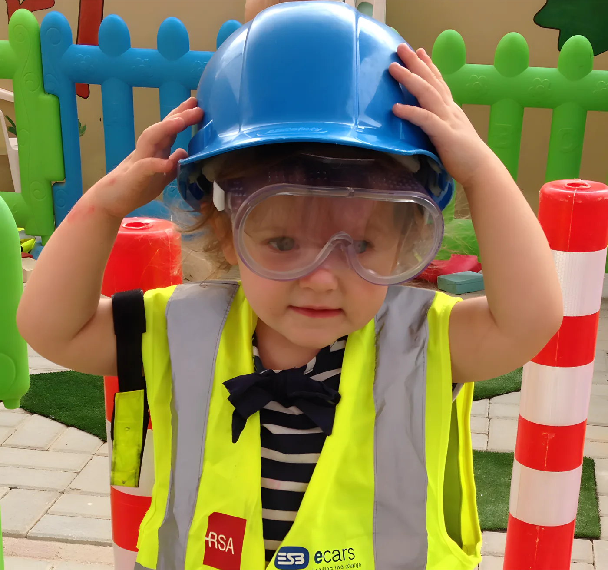

Home / Classes
Our classes
Five crews, from 3 months to 4 years. Every room is set up for its age, with toys and books stored low so children can reach them and explore at their own pace.

01Treasure KeepersBaby class · 3 months to walking
The baby room gives warmth, fun and security. It's equipped with soft furnishings where babies can crawl and wriggle safely, which helps them grow physically and mentally.
We keep each baby's familiar routine. Feeds and naps follow what you do at home, agreed with you, and we work with you on weaning, hand foods and solid foods when the time comes.
Their day includes
- Learning through play
- Sensory toys that move, sound and feel different
- Peeping games and finger and toe games
- Music and song time
- Floor play and mirror work
- Time set aside for cuddles
A record book goes home with every baby: what they ate, nappy changes, sleeps, and what they got up to.

02Little ExplorersToddler class · walking to 2 years
A colourful, homely room for a small class of 8. At this age everything is a chance to learn, so the day gets a little more structured, with both planned and child-led activities across the seven EYFS areas.
Activities include
- Singing and story time
- Dancing
- Painting and sticking
- Sand and water play
- Imagination games
- Messy play
- Outdoor play with push, pull and wheeled toys
There's a special focus on language at this stage. Feeds and naps still follow your home routine, and there's always time for cuddles.
03Jolly RogerPlaygroup · getting ready for preschool
Playgroup gets children ready for a learning room: confident learning on their own, and making friends on their own, in a nurturing and safe place.
We focus on strong listening and motor skills, the base for a love of learning. The day follows a routine very close to Preschool.

04Mini Pirates & Neverland KidsPreschool · 2 to 3 years
In the mind of a 2 year old, everything is "mine" and "I want". So with a scattering of guidance, a bucket full of patience and an answer to every "why", our team helps your little one make choices, take risks, build, create and learn.
- British EYFS curriculum
- Jolly Phonics for early literacy
- Weekly topic for art, craft and learning
- One P.E. session a week: running, football, sports
- The IT Station: a touch-screen desktop with learning apps
- Outdoor play twice a morning

05Captain Hook's CrewFoundation Stage 1 · 3 to 4 years
Our Foundation Stage 1 class gets children ready for the move to "big school". The programme is more structured, to help each child reach their milestones and the early learning goals set out in the EYFS.
- Circle time with the calendar and sharing stories
- Jolly Phonics
- Weekly topic at Foundation level
- Weekly P.E.
- IT Station time
- Graduation at the end of the year

Sample routine, Preschool and Foundation
The morning session runs 9am to 1pm. Daycare is open from 7am to 6pm, Monday to Friday.

| 9.00 – 9.20 | Hello to the children, goodbye to parents, supervised free play |
| 9.20 – 9.40 | Circle time: register, good morning song, ABCs, numbers, shapes, colours, topic of the week, singing |
| 9.40 – 10.00 | Outdoor play (weather permitting) |
| 10.00 – 10.15 | Wash hands, toilet, nappy changes |
| 10.15 – 10.30 | Snack time |
| 10.30 – 11.30 | Group activity on the topic of the week: art and craft, music and movement, show and tell, academic work |
| 11.30 – 11.45 | Outdoor play (weather permitting) |
| 11.45 – 12.00 | Wash hands, toilet, nappy changes |
| 12.00 – 12.15 | Lunch |
| 12.15 – 12.45 | Extra activity: movement and dance, musical instruments, baking, library, free flow |
| 12.45 – 1.00 | Tidy up, shoes on, bags ready, story time while parents arrive |
The seven areas of the EYFS
Three prime areas come first. The four specific areas build on them. Our activities are planned around all seven but stay flexible, so staff can follow your child's own interests.
Pink prime areas Green specific areas
A new topic every week
Every class, from babies to Foundation, follows the same weekly topic, each at its own level. Most of the art, craft and learning that week is built around it.
- All About Me
- My Family
- Cooking Week
- Construction Week
- Senses Week
- Creepy Crawlies
- Gardening Week
- Space Week
- IT Week
- Transportation
- Recycling Week
- Reading & Book Week
- Road & Fire Safety
- Healthy Eating
- Friendship Week
…and lots more.
